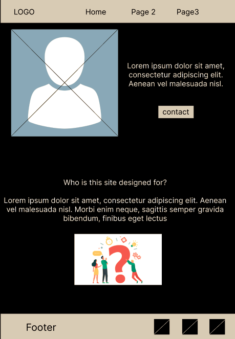

Overview
Purpose
The purpose of this website is to show future employers what to expect if they hire me. It will allow me to show what skills i have gained and will allow them to decide if they want to hire me.
Audience
The audience for this website are people who are looking for someone to make a webpage for them or to help them with developement on an already existing website. It will help show what I can do, and will allow people to contact me if they decide they want to. The website will be designed for Desktop and Laptop users.
Branding
Logo
Style Guide
Color Palette
Palette URL:
https://coolors.co/2d2d2d-c1bdb3-f06429-ffffff| Primary | Secondary | Accent 1 | Accent 2 |
|---|---|---|---|
| #2d2d2d | #c1bdb3 | #f06429 | #ffffff |
Typography
Heading Font: 'Raleway'
Paragraph font: 'Rubik'
Navigation
Site Map
Content
Home page
Who is the site designed for?
People will come to my site while looking for someone to design or work on a website that already exists. It will allow them to see what I can do and what they can expect if they decide to contact me to work on a website. It will allow me to introduce myself and allow me to show what I have learned to future employers or allow me to do independent work for others. It will allow me to answer any questions I think they might have, like my qualifications, where I studied, etc. It will hopefully allow me to alleviate any concerns the site visitor has . It will allow me to tell the visitor about myself so people can decide whether or not they are interested in my work.Images for the Home page


What is this site
What does this site do?
will allow users to go around and see what I can offer in terms of my design choices and what I am capable of doing. It will also allow interested viewers to be able to easily contact me if they want to. They can go around and look at the different effects I have applied to my site. The most important piece of information needed will be contact information so people can easily contact me. I will also need my own logo, images of myself and what else I have worked on, my skills, where I’ve studied, etc. It is important for people to know what skills I have learned and what type of work I have done to make sure they know what they would be getting into if they decide to hire me.
Images for the Page 2
Why this site
Why use my site?
The site will need to made as compelling as possible to keep users interested. There will be people who may not be interested in my site, maybe I am not what they are looking for or they do not like my style, I will ask if they know of anyone who may be interested. If others like my site and hire me to work for them, they are also more likely to share what I have done with others and will allow more people to visit my site. This will be an effective way to get more people to come to my site. A bad customer experience will push people away, so I will do everything in my power to keep the customer/future employers happy.
Images for the Page 3


Wireframes
Create three wireframes for your site. One for each page and list them here
Home
The first image has a a cross over it as i have decided to make a portrait of myself. The black boxes in the footer will be social links
[Page 2]
[Page 3]
Decided to keep the layout the same as page 2 for familiarity